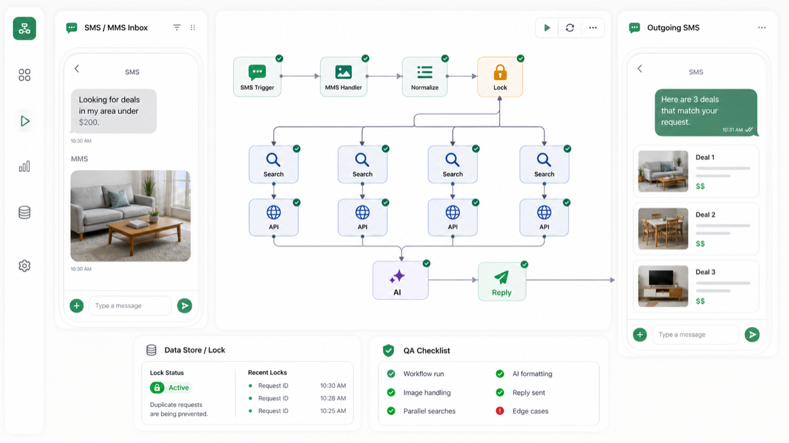

Architecture pass
Scenario map, data-store schema, locking plan, API/error strategy, and milestone acceptance checklist.
Prepared for Alex and SnipeAgent
I saw your Make Community post for an AI-powered SMS/MMS system using Sinch, Claude Haiku, Rainforest API, SerpApi, Carrd webhooks, parallel calls, E.164 normalization, data stores, locks, and re-engagement flows. I would start with a paid architecture pass, then roll that into the fixed build if the acceptance checklist is approved.

SMS LOCK QASuggested workflow
The safest path is to confirm the architecture and edge-case plan before wiring every scenario. That keeps the NDA-protected full scope useful without turning the first week into guesswork.
Fixed build path
The architecture pass turns the NDA scope into an implementation checklist, module map, and risk register. If it matches what you need, that payment is credited toward the fixed build.
Scenario map, data-store schema, locking plan, API/error strategy, and milestone acceptance checklist.
Implement the approved Make scenarios, test SMS/MMS paths, parallel searches, AI formatting, and re-engagement flows.
Video-demo checkpoints, runbook notes, failure-recovery guide, and a final acceptance test pass.
Acceptance checks
Next step